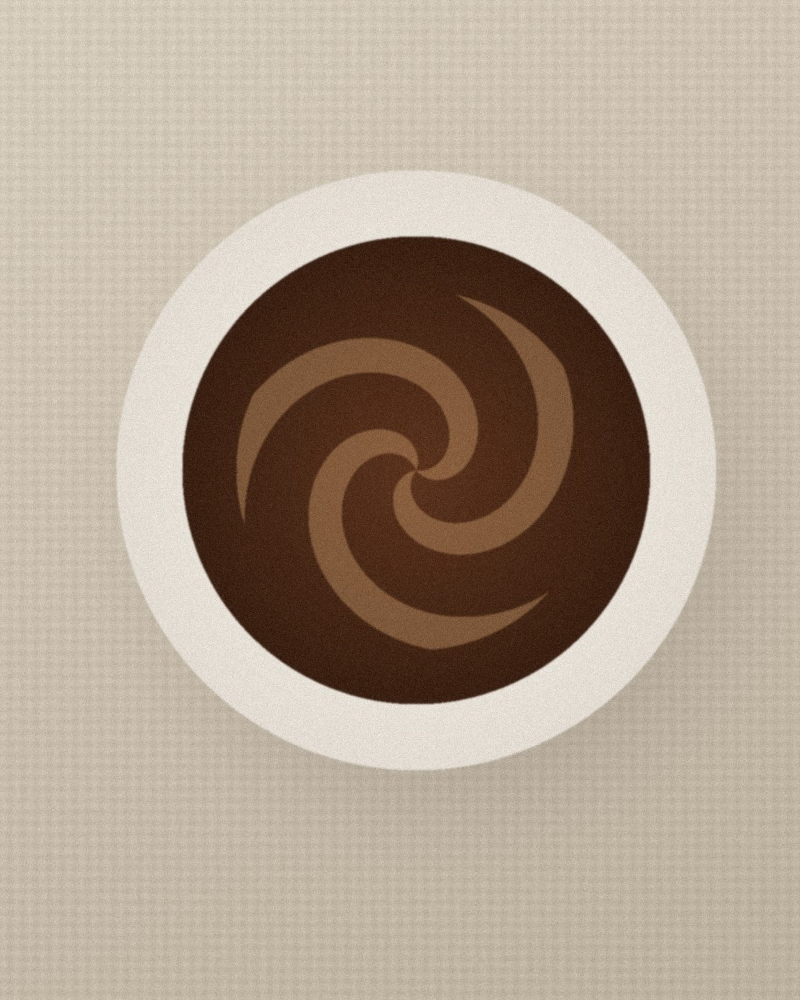

Coffee for
the slow
hours

Roasted on Mondays · Served slowly ·
We roast a little coffee every Monday, and pour it slowly all week — for people who still have time to sit.
Three farms,
one roaster
We buy from three farms we have visited, roast in small batches, and rest the beans for a week before they reach your cup.
- Yirgacheffe
- Huila
- Baoshan
Open from first light to the last pour.
- 08:00 — 18:00
- 09:00 — 18:00
- Closed. We roast.
“The best cup is the one you didn’t have to hurry.”
No. 14 Baoshi Road, Xihu District, Hangzhou.
Look for the green door next to the bookshop.